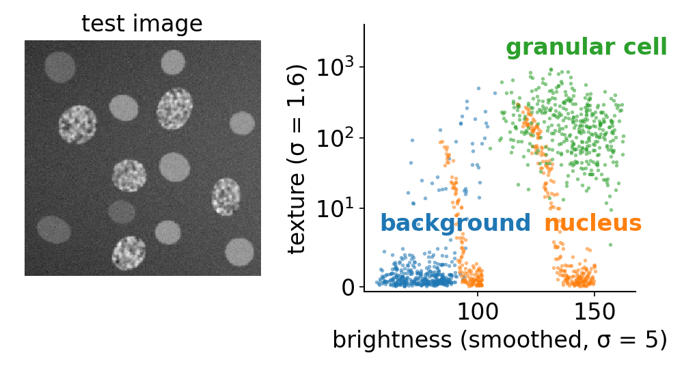
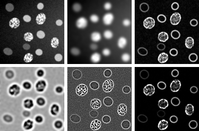
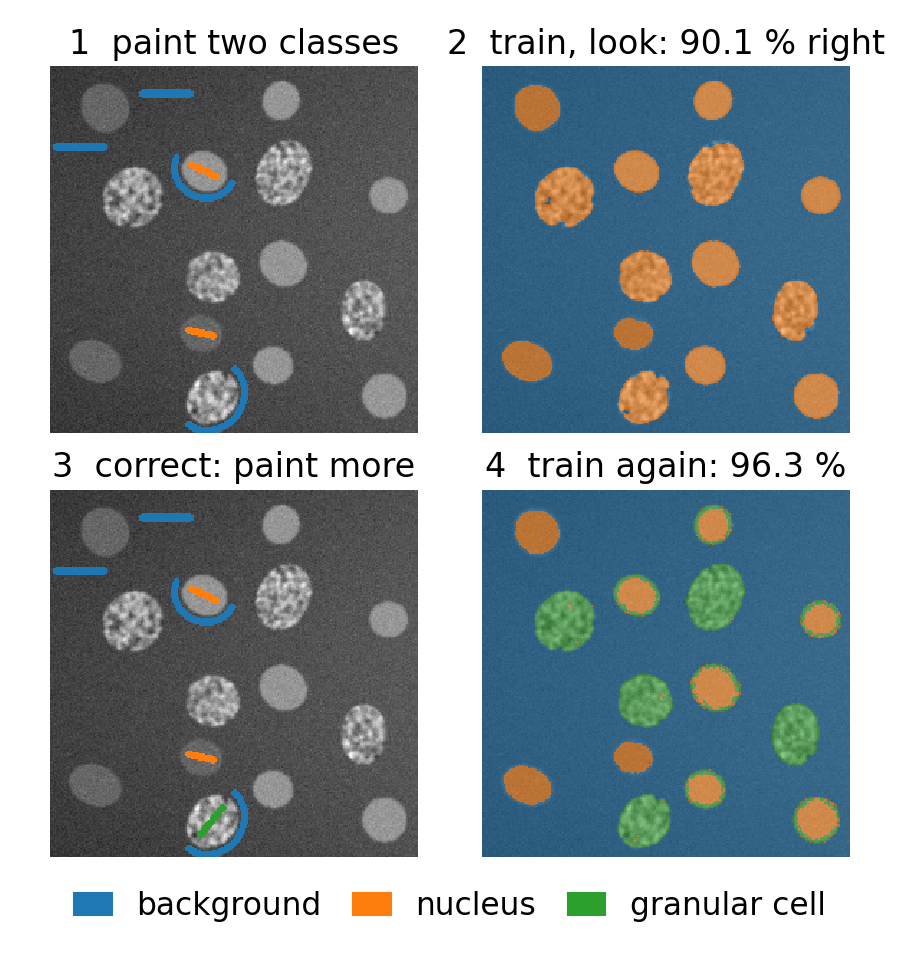
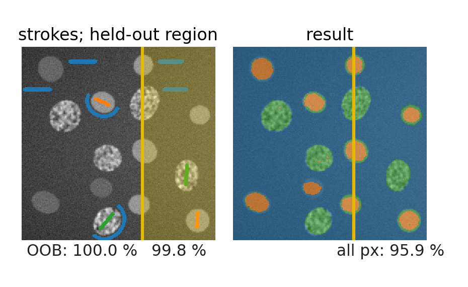
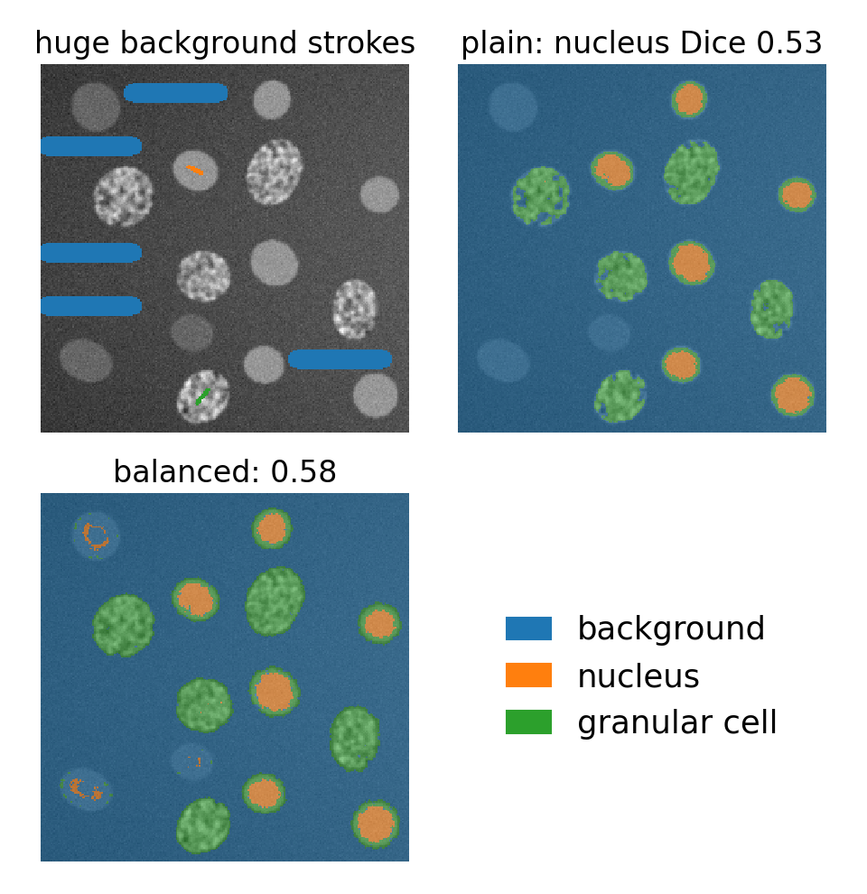
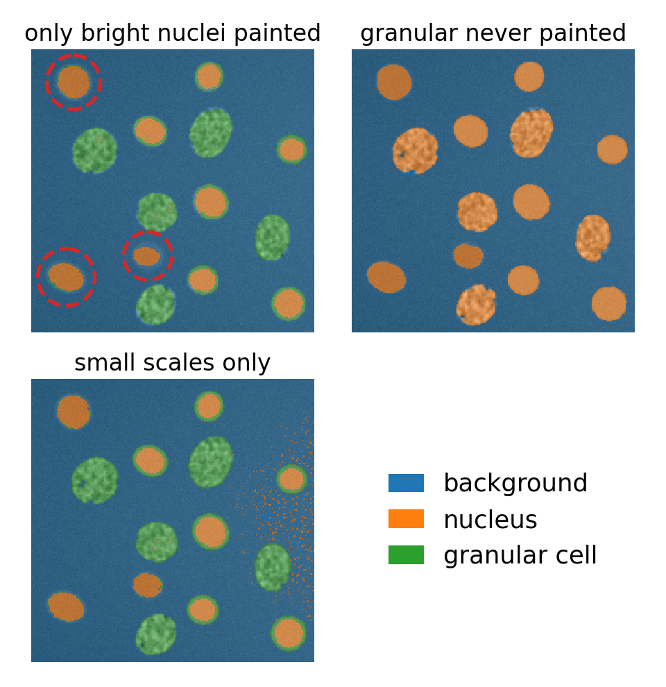
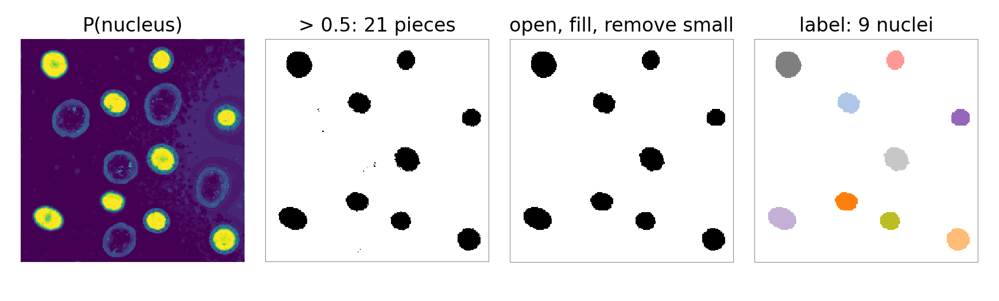

Paint a few strokes on an image, “this is nucleus, this is background”, and let a forest label every pixel: semantic segmentation without deep learning.
Every pixel becomes a point in feature space; the painted pixels are the training set.
The feature stack: filters at several scales describe each pixel’s neighbourhood.
The interactive loop: paint, train, look at the result and the uncertainty, correct.
The traps: neighbouring pixels are not independent, label imbalance, painting only the easy cases.
From probabilities to objects.
Slides titled The math give the formulas and proofs; the ideas are complete without them.
Every pixel is a point
Thresholding asked one question of one number: is the pixel bright?
Instead, describe each pixel by many numbers: its brightness at several blurs, how strong the edges near it are, whether it sits in a blob, a line or a texture.
The painted pixels, with their classes, are training points in this feature space.
The forest colours the whole feature space, and with it every pixel of the image.
Why not intensity alone? Two kinds of cell in the test image have the same mean brightness: smooth nuclei and granular cells. Only their texture differs: exactly the situation of the eight pixels in the decision-trees unit.

Each dot is one pixel. Brightness alone puts bright nuclei and granular cells together (right); texture pulls them apart. The vertical orange streaks are nucleus pixels near the rims, where the σ = 5 blur mixes in background.
The feature stack

Each filter family at each scale \sigma gives one image, a channel; a pixel’s feature vector is its value in every channel. Above (test image, left to right, top row then bottom): smoothed at \sigma = 1 and 5, gradient magnitude (\sigma = 1.6), Laplacian of Gaussian (\sigma = 5), Hessian eigenvalue and structure-tensor eigenvalue (\sigma = 1.6).
The families (recall)
family
channel
lights up on
intensity
Gaussian-smoothed image
how bright is it here, at this scale?
edges
gradient magnitude
is there a boundary nearby?
blobs
Laplacian of Gaussian
a bright or dark spot of this size
ridges
Hessian eigenvalues
lines versus blobs
texture
structure-tensor eigenvalues
oriented or busy texture, corners
The filters come from the filtering unit (Gaussian, derivatives, Laplacian) and the edges, blobs and ridges day (LoG, Hessian, structure tensor). The forest takes the whole pile as it is: no scaling, and redundant channels do no harm. Box means and local variances are the cheap cousins (integral-images day).
The math: the stack as formulas
With L_\sigma = G_\sigma * I the image smoothed at scale \sigma:
ridges: the eigenvalues \lambda_1 \ge \lambda_2 of the Hessian \sigma^2\begin{pmatrix}L_{xx} & L_{xy}\\ L_{xy} & L_{yy}\end{pmatrix};
texture: the eigenvalues \mu_1 \ge \mu_2 of the structure tensor G_{\sigma/2} * \big(\nabla L_\sigma \nabla L_\sigma^{\top}\big), times \sigma^2.
The factor \sigma^2 makes responses comparable across scales. Derived and explained on the edges, blobs and ridges day; here they are only inputs.
The loop: paint, train, look, correct
Paint a few strokes per class.
Train the forest on the painted pixels (seconds, or less).
Look at the segmentation and at the uncertainty map (1 − the largest vote fraction).
Correct: paint where the result is wrong or uncertain, and train again.
Few strokes go a long way, because each stroke holds hundreds of pixels and the features describe their neighbourhoods. Interactive pixel-classification programs implement exactly this loop.

Try it: paint and classify
Trap 1: neighbouring pixels are near copies
The pixels of one stroke are almost identical in every channel (the filters even mix them).
OOB error assumes independent samples. A pixel left out of a tree’s bootstrap sample has its neighbour inside it: the “unseen” pixel is not new. OOB accuracy is close to 100 % almost regardless of the result.
Honest evaluation: a held-out region (or another image) with its own labels: the confusion matrix and Dice of the thresholding day.
Even then: your strokes sit where labelling was easy. Accuracy on painted pixels overrates the result; a full annotation of a region is the honest test.
Rule: split by image or region, never by pixel. The evaluation day treats leakage and object-level evaluation in full.

Same forest, three scores: the OOB estimate (left of the line), the held-out strokes, and every pixel of the held-out region against the truth.
The math: why OOB fails here
The bootstrap treats the n painted pixels as n independent draws. Pixels along a stroke are strongly correlated: the effective number of independent samples is close to the number of strokes, not the number of pixels. A tree that saw pixel p + 1 has, in effect, seen pixel p, so the OOB vote on p is not a prediction for new data. The OOB error is then an estimate of the error on pixels next to the strokes. Leaving out whole strokes (or regions) restores independence: the SVM day’s by-stroke cross-validation does exactly that.
Trap 2: label imbalance
A big background stroke has thousands of pixels; a nucleus stroke a few dozen.
Ambiguous pixels (dim nuclei, object rims) fall into leaves dominated by background: the probabilities lean towards the big class.
Fix: balance: weight each class by 1/n_c (or sample the same number of pixels per class).
Balancing moves errors from the small classes to the large one: the small classes are found more often, the background a little less. It cannot invent information the strokes lack.

The math: class weights = resampling
With weight w_k for every sample of class k, the class shares in a node become p_k = \frac{w_k n_k}{\sum_l w_l n_l} , the same as if each sample of class k were copied w_k times. So weighted Gini picks the same splits as Gini on the resampled data. Balancing weights w_k = \dfrac{n}{K\, n_k} give every class the same total weight n/K. Example: 400 background and 20 nucleus pixels: w = 0.525 and 10.5 (ratio 20). A leaf with 8 background and 2 nucleus pixels: P(\text{nucleus}) = 0.2 unweighted, 0.83 weighted.
Trap 3: the forest knows only what it was shown
Paint only the bright nuclei, and the dim ones look like nothing the forest knows: part of them become background.
Leave out a whole class (the granular cells) and its pixels are forced into the classes that exist, often confidently: the uncertainty map flags rims and new illumination, but not “something else that looks like a nucleus”.
Scale: channels much larger than the structures blur across boundaries; with only small scales the result is speckled and loses context.

From probabilities to objects
Threshold the probability map of the class you want (0.5, or chosen with the ROC or precision–recall curve of the thresholding day).
Clean up with morphology: opening, filling holes, removing small pieces.
Or smooth with a graph cut: use -\log P(\text{class} \mid \text{features}) as the data term (the graph-cuts day).
Then label the connected components and measure them, and the measurement table may go into another forest (previous unit).

Forests, SVMs and networks on the same pixels
A forest on a hand-made stack is the strong baseline that works from a few strokes: no scaling, little tuning, fast.
An SVM on the same stack needs standardised features and a search over its settings (the SVM day plugs into the same demo).
A convolutional network (U-Net, the neural-networks day) learns its own filters instead of the stack, and needs many more labelled pixels.
Summary
Pixel classification = classification in a feature space whose axes are filter responses at several scales.
The feature stack: intensity, edges, blobs, ridges, texture; the forest needs no scaling.
The loop: paint, train, look at segmentation and uncertainty, correct.
OOB is optimistic for pixels (neighbours are near copies): evaluate on a held-out region with full labels.
Imbalance: weight or resample; the forest knows only what it was shown.
Probabilities → threshold, morphology or graph cut → objects.